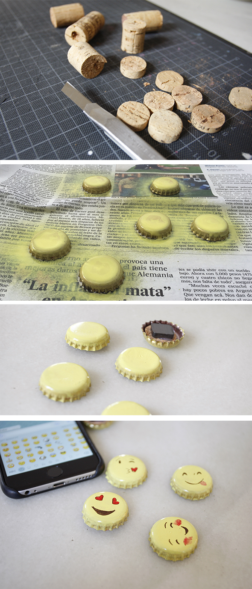

Un imán hecho en casa fácil y rápido. ( También puedes hacer broche.)
Con spray se pintan las chapa en amarillo, pinta las caras de emoji en las chapas secas, cortada una fila de un cocho, le pega el corcho en las tapas y encima el imán.